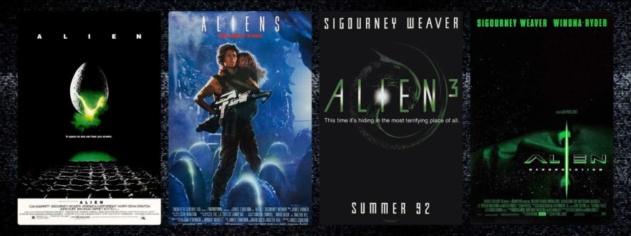
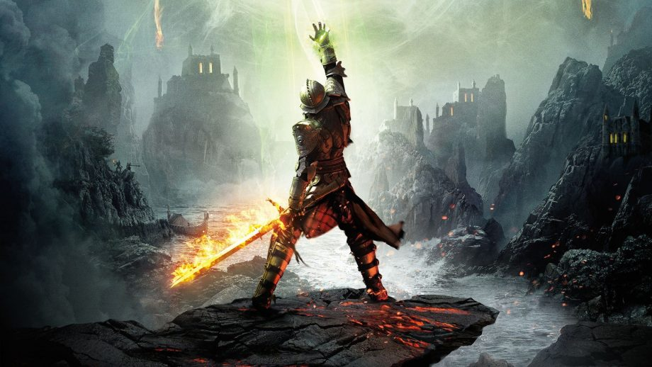

Últimas entradas
Saga Alien

La saga de Alien es una saga cinematográfica de ciencia ficción y terror que relata la historia de la teniente Ellen Ripley (protagonizada por Sigourney Weaver) y su lucha contra una forma de vida alienígena, conocida simplemente como el alien o xenomorfo. La serie comenzó en 1979 con la película de 20th Century Fox Alien, el octavo pasajero y a partir de esta se produjeron tres secuelas y dos precuelas, al igual que numerosos cómics, libros y videojuegos basados en la franquicia.
Relacionadas con la serie están las películas de Alien vs. Predator (Alien vs. Predator y Alien vs. Predator: Requiem), que se basan en la franquicia que hace la combinación del universo de Alien con el de la saga cinematográfica de Depredador.
Leer más
The Witcher

La Saga de Geralt de Rivia o la Saga del brujo (en polaco, Saga o wiedźminie) es una serie de cuentos y novelas de fantasía heroica creada por el escritor polaco Andrzej Sapkowski. Consta de diez libros (publicados en español como nueve por la editorial Bibliópolis). En ellos se narran las aventuras de una serie de personajes, centrados en torno al brujo Geralt de Rivia, uno de los últimos brujos sobre la tierra. En el universo de Sapkowski los brujos son cazadores de monstruos. Dichos brujos han sido genéticamente modificados en su juventud para desarrollar habilidades sobrenaturales y capacidades superiores de combate. La saga ha sido adaptada a historietas, televisión, juegos de mesa, juegos de cartas, videojuegos, y más recientemente la plataforma de series y películas Netflix lanzó una serie llamada The Witcher.
Leer más
Dragon Age

Dragon Age es una serie de videojuegos de rol de alta fantasía creados por BioWare. El primer juego, Dragon Age: Origins, fue lanzado en 2009. Dragon Age II, una secuela de Origins, fue lanzado en marzo de 2011. Dragon Age: Inquisition fue lanzado en noviembre de 2014.
El escenario de fantasía de la serie también ha sido utilizado por varios otros medios, incluyendo libros y juegos de rol de mesa, y los tres juegos principales se han unido a una variedad de complementos de contenido descargable.
Leer más